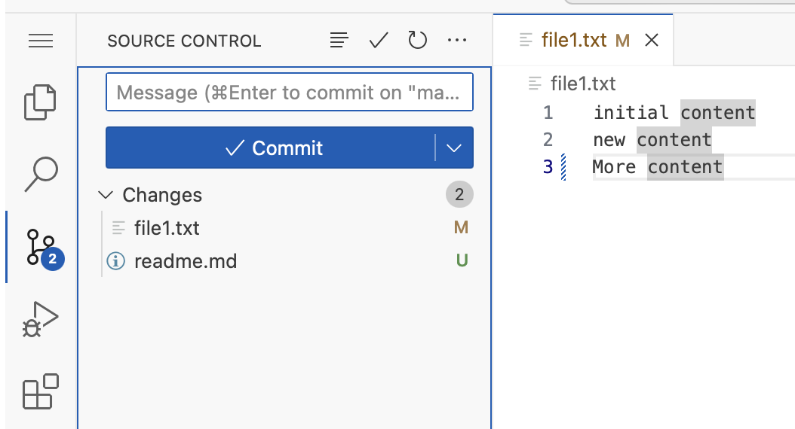

5: Create First Changes (UI)
Let’s now use the UI, to do the same as before.
title: Open file1.txt
file: ~/exercises/file1.txt
Open file1.txt and add a new line at the bottom.
In our example we wrote "More content"

Click on the source Control icon (there should be a number next to it)

If the number is 2, that means that there is 2 files with changes in this Git repository.
If you followed the guide, then the 2 files are
- file1.txt
- readme.md
The readme.md has been there all the time, but was never added to git.
Let’s add both files now.
Start by pressing the + next to each file
This add’s them to staging
Then write a commit message in the box above the commit button. We have written “my ui changes” as our commit message.

After you click Commit the button changes to publish branch.
If this Git repo was part of a remote Git repo, then we could now push our changes to that repo (or create a new repository on that remote server), for all to see, and colaborate.
Skip this for now.